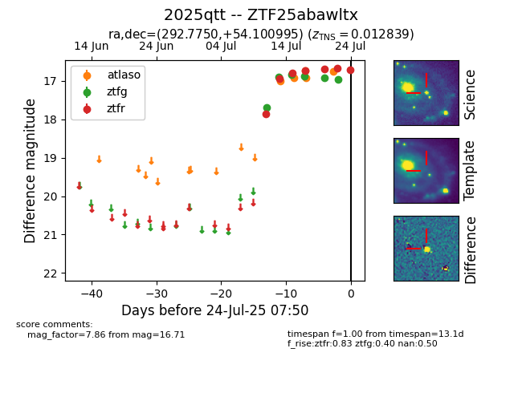

Target ZTF25abawltx at 2025-07-24 07:50, see:
FINK: fink-portal.org/ZTF25abawltx
Lasair: lasair-ztf.lsst.ac.uk/objects/ZTF25abawltx
ALeRCE: alerce.online/object/ZTF25abawltx
TNS: wis-tns.org/object/2025qtt
YSE: ziggy.ucolick.org/yse/transient_detail/2025qtt
alt names
ZTF25abawltx (ztf,fink)
2025qtt (tns,yse)
coordinates:
equatorial (ra, dec) = (292.7750,+54.10099)
galactic (l, b) = (85.9490,+16.23093)
photometry
last atlaso=16.75, ztfg=16.96, ztfr=16.71
5 atlaso, 6 ztfg, 7 ztfr detections
